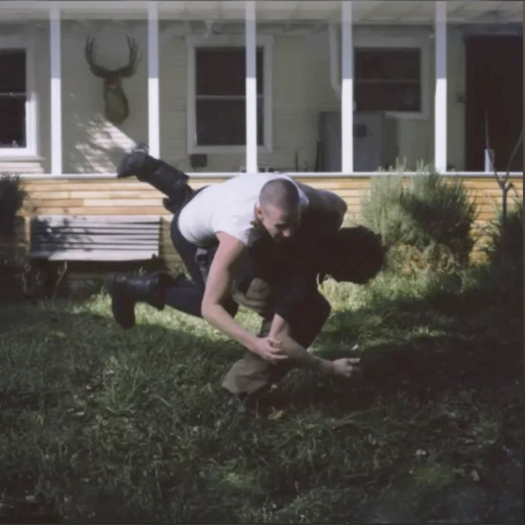
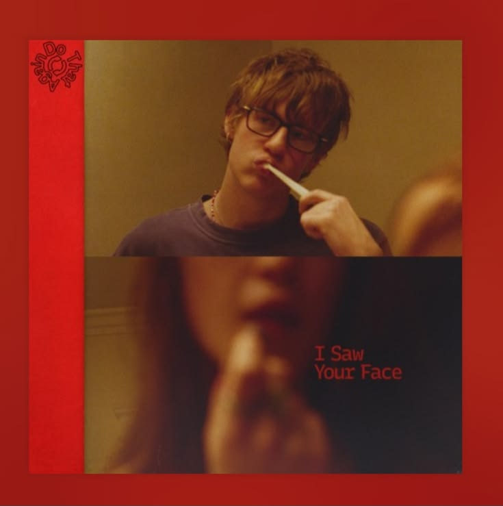

My Top Spotify Artist
One of the iconic artists of all time
Malcolm Todd
Malcolm Todd Hobert (born September 15, 2003) is an American singer-songwriter and record producer. He signed with Columbia Records after he went viral on TikTok for his 2023 singles "Art House" and "Roommates", both of which were included on his mixtape Sweet Boy (2024). His self-titled debut studio album (2025) peaked at number 49 on the Billboard 200 and spawned the single "Chest Pain (I Love)", which became his first entry on the Billboard Hot 100. Todd's music is a blend of indie pop and R&B, drawing influences from the bedroom pop scene and 2010s alternative R&B.[24] His music is inspired by bedroom pop artists like Steve Lacy, Omar Apollo, Dominic Fike, and Ryan Beatty.[25] Todd has said that he enjoys using obscure chords in his music to make him unique.[26]
Songs ⬇
- Sweetboy (2024)
- Chest Pain (I Love) (2025)

- I saw your face (2026)
